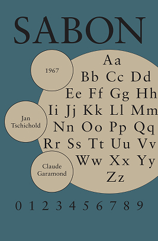
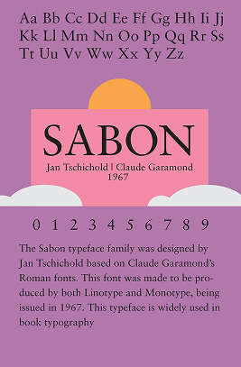
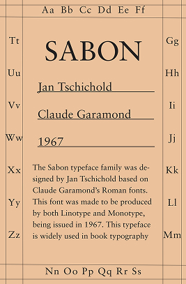

Sabon Poster

The purpose of this project was to design a poster that communicates the essential qualities of our chosen typeface, such as its designer, background, and different uses throughout history. It was also required to include the typeface's date of issue, the entire alphabet, and one set of numbers from 0 to 9.
The typeface I selected for this project was Sabon, which was designed by Jan Tschichold based on Claude Garamond's Roman font. It was produced to be used for Linotype and Monotype machines. Jan Tschichold in the early 1900s was more inclined towards modernist typography, even spearheading The New Typography movement. Following World War II and his career at Penguin Publications, Jan Tschichold turned to more classicist roots, with an increased emphasis on legibility, leading to the creation of Sabon.
Shown below is my final graphic, as well as a few other iterations. My poster was influenced by Tschichold's career at Penguin Publications in the way it resembles an old book cover. This was not only in reference to Jan Tschichold's background, but also how Sabon is commonly used in book typography.


